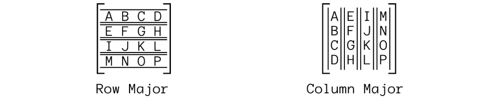
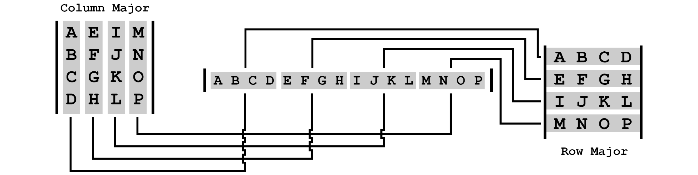

Matrix topology refers to how a matrix is laid out. The topic becomes confusing because matrices has two topologies that are not really related. Matrices have a Logical Topology, which is how you think about a matrix but they alos have a Physical Topology, which is how you store the matrix in memory. The two can be different.
When talking about logical topology we are talking about the order that elements appear in a matrix. For example, the following matrix has it's values aranged by columns, it's a Column Major matrix
$$ \begin{bmatrix} A & E & I & M\\ B & F & J & N\\ C & G & K & O\\ D & H & L & P \end{bmatrix} $$
The matrix below has the same values but arranged by rows, it's a Row Major matrix.
$$ \begin{bmatrix} A & B & C & D\\ E & F & G & H\\ I & J & K & L\\ M & N & O & P \end{bmatrix} $$
Another way to think about the major of a matrix is in terms of vectors. Assume we're talking about a 4x4 matrix. You can think of that matrix as being made up of four vectors. How the vectors are laid out determines the major of the matrix. In the sample below the left matrix is row major and the right matrix is column major. Note how both matrices are made up of the same four vectors.

Matrix elements are often refered to as their row / column indices (starting at 0). For example, element (2, 1) usually refers to row two, column one. This is a convention not a standard, there is no guarantee that texts or libraries will use this convention.
The major of the matrix does not matter when accessing a matrix using row / column convention. For example, element (2, 1) would be J in the row major matrix and G in the column major matrix shown above.
Generally, math texts use column major matrices, this is my preference as well. For this blog, all matrices will be implemented using a logical column major layout.
Other than logical topology, we have to also consider phsyical topology. Physical topology refers to how a matrix is stored in memory. In games, matrices are stored linearly in memory as one big array. All components of each vector are usually used at the same time, making this a cache friendly approach. Consider the following matrix for example:
$$ \begin{bmatrix} A & D & G\\ B & E & H\\ C & F & I \end{bmatrix} $$
It could be stored linearly in memory one row at a time. This is often called Row Storage, the array would look like this:
char mat[9] = { 'A', 'D', 'G', 'B', 'E', 'H', 'C', 'F', 'I' };Or it could be stored in memory one column at a time. This is called Column Storage, the array would look like this:
char mat[9] = { 'A', 'B', 'C', 'D', 'E', 'F', 'G', 'H', 'I' };Logical topology is how you think about a matrix, physical topology is how the matrix is stored in your computers memory. Physical and logical topology are not tied together. You could have a column major matrix with row storage; that is, a matrix with a column major logical topology but row major physical topology.
If the physical and logical topology of a matrix match, the matrices are interchangable as far as the computer can tell. Why? They are stored in the same array elements. Consider the following image, it shows logical row and a column major matrices. The row major matrix has row storage, the column major matrix has column storage. Note how the elements stored in the array map back to like elements in both matrices.

DirectX and OpenGL are often classified as row or column major, which has lead to a decent amount of confusion. As you've seen on this page, simply calling a matrix row or column major is misleading, because it could use row or column storage. The major of the matrix dictates multiplication order (Section 5, Multiplication), but it's storage is important as well.
Another issue adding to the confusion is transforming vectors (Section 6, Transforming Vectors). This is because a vector can have it's own topology as well. For example a 4 component vector could be treated as a 1x4 matrix or a 4x1 matrix. The topology of the vector affects multiplication order between matrices and vectors.
The lack of standards in matrix and vector topology, both logical and physical makes working with matrices rather difficult. Let's explore the full picture for both of these API's.
OpenGL: OpenGL has column major logical topology. OpenGL uses column storage.
DirectX: DirectX has row major logical topology. DirectX uses row storage.
Both OpenGL matrices and DirectX matrices have the same physical memory layout, even tough they are logically different. Both API's use a 16 value array with the base vectors being laid out contigously in memory.
Don't get this section confused, the matrices of the two API's are not 100% interchangable. For example, NDC space is different for both API's. This topic is going to be out of the scope of this blog. NDC space and what to store in matrices will be covered in a future blog